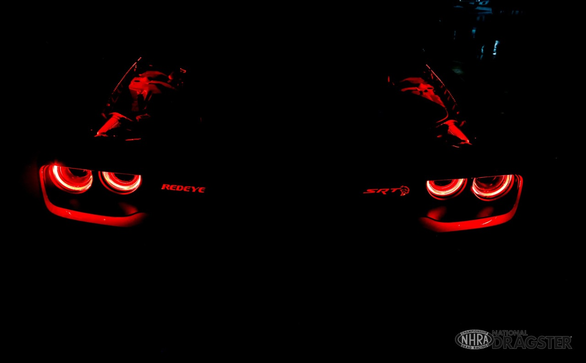
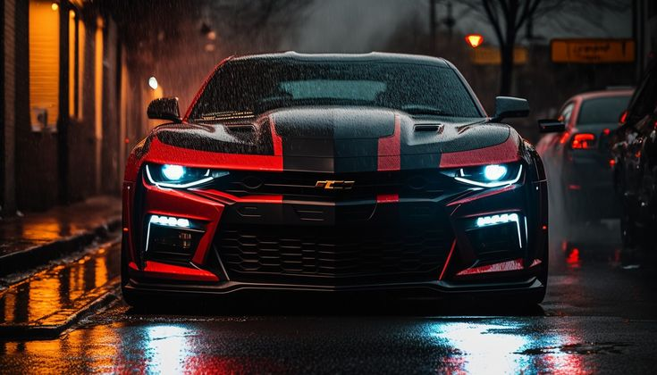

Welcome to Torque Titans
Welcome to Torque Titans, your one stop shop for all the knowledge
you will need as beginner in the
ultimate muscle car experience. As a passionate individual, somewhat of a gearhead and a
muscle car history geek I am looking to dedicate this website to preserving and celebrating the
culture, performance, raw beauty of American muscle cars and the gateway into the that raw engine power
at an affordable price is all what this is about.
This site as I mentioned is going to be your ride through the evolution of horsepower
— from classic legends to modern marvels all in a quick ride so strap that seatbelt on (cause safety first).
While their are many honorable mentions we will focus on three iconic cars that defined
their eras and continue to leave tire marks on the streets and in our hearts year after year without fail.
Meet the Icons
Ford Mustang

The Mustang the first one on the streets and faster than most people think
launched what can be known as a revolution back in 1964 and came to be known as the face of the pony car era.
Known for that powerful throttling V8 engines and that sleek fastback silhouette nobody ever went wrong with a Mustang,
the Mustang quickly beacme and still continues to be a symbol of
American performance and rebellious spirit.
Learn more about the Mustang →
Dodge Challenger

Bold, aggressive, and the unrelentingly powerful are the words that are still not enough to define,
the Challenger, the beast that roared onto the streets of Florida in 1970 still roars loud even through the last call.
With that bold and fearless wide stance and the uplift brought by the modern Hellcat reinventions,
the Challenger is a beast that refuses to be tamed year after year.
Learn more about the Challenger →
Chevrolet Camaro

Built to take on the horse (Mustang), the Camaro which can be doughtly labled as the one that
brought style and muscle together in a car like no other had ever though of.
While the modern day cars like challanger still take pride in the retro look camero each year fetures a new bold look
that never failed to impress the new generations.
From the Z/28 classics to the track hungry ZL1, the Camaro is Chevrolet’s call to the streets to conquer the
performance
arms race.
Learn more about the Camaro →